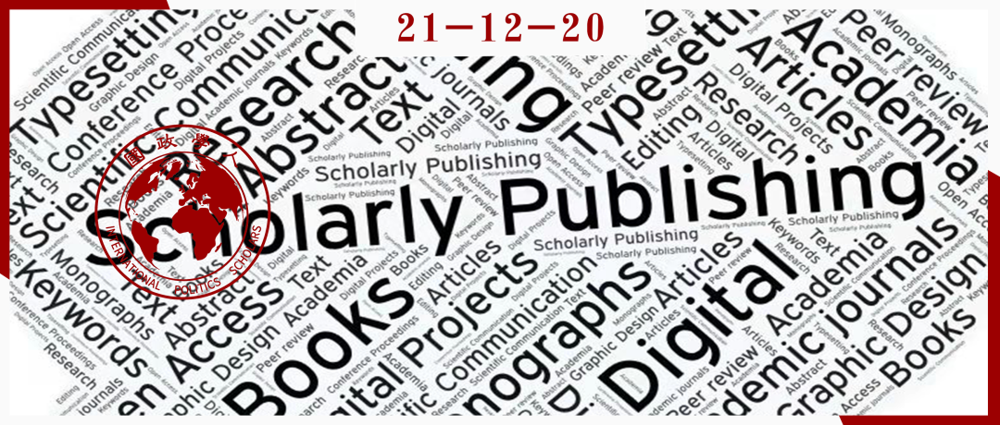

收录于合集 #《国际关系前沿》2021年第12期 22个

作品简介
作者： Mathis Lohaus，德国柏林自由大学奥托-苏尔政治学院副研究员；Wiebke Wemheuer- Vogelaar，德国柏林自由大学奥托-苏尔政治学院DFG项目主管。
编译： 杨紫茵（国政学人编译员，北京大学博士生）
来源： Mathis Lohaus and Wiebke Wemheuer-Vogelaar, Who Publishes Where? Exploring the Geographic Diversity of Global IR Journals, International Studies Review , Vol. 23, No. 3, 2021, pp. 645-669.
归档： 《国际关系前沿》2021年第12期，总第39期。

内容摘要
国际关系学在多大程度上是一个全球化的学科？本文研究了来自非洲、东亚、欧洲、拉丁美洲、北美洲和英国的17本期刊中2011年至2015年期间发表的2362篇文章，通过收集简历来分析作者们的地理多样性。通过分析所得数据，我们讨论了发表模式是如何被作者的动机（供给侧）与编辑的偏好和战略（需求侧）的互动来推动的。我们的主要发现有两方面。第一，全球的国际关系研究是碎片化和地方性的。所有的期刊都会常常发表本土作者的文章，不过这样的地方性集群的规模大小不一。地理多样性在我们所提出的国际发表“宜居带”(goldilocks zone)是最高的。这些英文期刊在全球都有知名度，但竞争不那么激烈，以至于不会出现北美作者发表远多于其他地区作者的现象。第二，国际关系正在通过研究人员流动实现全球化。许多学者开始移居到另一个地方攻读博士学位，然后以侨民、海归或离散者(diaspora)的身份发表论文。他们以访问学者(academic tourists)的身份加入，在那个本来与他们没有明显联系的地区发表文章。因此，国际关系期刊的背景看似很多元化，但是其中许多作者都在北美、英国和欧洲受过教育。
文章导读
一场关于“全球国际关系学”(global IR)的激烈辩论正在进行，这有时也被称之为非西方国际关系学。许多学者都提出了关于世界各地国际关系研究结构和行为的概念性、规范性以及经验性观点。阿查亚和布赞通过对比研究内容和发表内容，探讨了是否能够找到非西方国际关系理论这一问题。蒂克纳等则讨论了在哪些地区以何种方法研究了哪些实质议题。另外还有学者通过研究“教学、研究与国际政策项目”(TRIP project)了解研究人员的行为和身份。
然而，一个关键但经常被忽略的步骤是探索国际关系研究中作者身份的规律。我们将作者的地理位置作为衡量多样性的关键指标。全球国际关系学的学者经常讨论关于支配地位、“守门人”(gatekeeping)和“外围”作者边缘化的问题。在一些学者看来，国际关系学科中的美国中心主义和欧洲中心主义偏见相当于一个质量问题(quality problem)：通过纳入更广泛的世界政治的视角，可以加强国际关系理论和实证研究。
为了分析学科的多样性，本文从一个直接的问题开始：谁的作品在哪里发表？期刊发表对于参与国际关系学科至关重要。但是，获取关于国际关系学作者身份信息的地理多样性的系统性数据是一项挑战。我们收集了来自非洲、东亚、欧洲、拉丁美洲、北美和英国的17本期刊中，2011年至2015年发表的2362篇文章作者的身份数据，期望能提供更全面的学科图景。
根据数据结果，我们探讨了为什么期刊之间的地理多样性会有所不同。作者与期刊的互动可以理解为一个双向的过程。作者为供给侧，由他们选择向哪个期刊投稿；期刊为需求侧，它们进行筛选。在供给侧方面，我们考虑到语言障碍和作者的专业动机两个因素：他们一般会向与其职业发展相关的期刊进行投稿，而以英文出版便可以在Web of Science数据库(WoS)中看到。在需求侧方面，我们预期编辑和审稿人的偏好与同样在期刊出版地工作或受教育的作者偏好最为一致。同时，编辑可以采取不同措施鼓励多样性。
我们的主要发现有两方面。第一，全球的国际关系研究是碎片化和地方性的。很少有作者在来自世界不同地区的期刊上发表文章。正因为他们都是使用英语的，所以那些在其他语言的期刊和在WoS之外的期刊上发表的作者就更为孤立。一般来说，作者在与其位于同一个地区的期刊上发表的占比最大，不过这样的地方性集群的规模大小不一。除了以本地语言发表的期刊，《国际组织》(International Organization)和《国际研究季刊》(International Studies Quarterly)的地理多样性最低。如我们所料，语言和职业动因正在强化这种模式。地理多样性在国际发表的“宜居带”(goldilocks zone)是最高的。这些英文期刊在全球都有知名度，但竞争不那么激烈，以至于不会出现北美作者发表远多于其他地区作者的情况。
第二，研究人员的流动有助于国际关系研究的全球化。通过比较每位作者在出版时的本科学位、博士学位和职业可见，除了本地人之外，还有四类作者。许多学者开始移居到另一个地方攻读博士学位或工作，然后以侨民、海归或离散者(diaspora)的身份发表论文。他们以访问学者(academic tourists)的身份加入，在那个本来与他们没有明显联系的地区发表文章。因此，国际关系期刊的作者背景看似很多元化，但是其中许多作者都在北美、英国和欧洲受过教育。
01
全球国际关系学：激烈的辩论但有限的实证分析
自从斯坦利·霍夫曼(Stanley Hoffmann)称国际关系学科是“美国社会科学”以来，国际关系学科的性质和发展方向一直是热门议题。目前有两种比较普遍的叙事。第一是关于所谓的美国主导地位。许多研究发现，美国学者在国际关系研究成果发表中占很大的比例，特别是在理论建设方面。全球TRIP研究调查结果显示，美国学者在同行眼中有着更高的地位。与此同时，国际关系学科存在内部分层，美国顶尖高校的研究人员在顶尖期刊上发表的文章比美国其他地区的同行多得多。第二则是关于多样性。由于知识生产背景塑造了研究结果，所以国际关系学科不是完全的全球化，也不是纯粹的本土化。因此，阿查亚与布赞提出应该关注“非西方”的国际关系学。
不过，目前很少有学者通过研究期刊作者身份研究国际关系学科的地理多样性。有些学者研究了美国和欧洲国际关系学研究生课程的授课内容，有些则探索了美国作者的地理集中程度及其研究成果中理论和方法范式。其中一个例外是，奥利·维夫(Ole Waever)曾经为8份国际关系期刊在1970年至1995年之间的6个时间点绘制作者地图，而后事实证明，美国、英国和欧洲的顶尖期刊几乎完全是由来自这些地区的作者组成的，很少有来自世界其他地区的作者。
02
对供给侧、需求侧和作者多样性的期望
文中关于地理分布的界定是从发表时间来看的作者教育背景（特别是博士学位）和工作背景。虽然学术期刊欢迎来自世界各地的作者投稿，但我们预计期刊所在地和作者的教育和工作背景之间存在很强的相关性。这可以理解为是一个双向选择的过程：供给侧为作者选择投稿的期刊，需求侧为期刊选择作者进行出版。
供给侧方面，社会规范和职业动因很重要。语言是一个显而易见的影响因素。虽然英语是国际关系学科的通用语言，但还是有很多人默认或有意使用他们的母语。对于一些研究人员来说，在国内或区域范围内引起讨论热度更为重要；而另一些研究人员则更热衷于在国际期刊上发表论文。而在选择期刊时，职业动因是一个关键的决定性因素。在美国寻求终身教职(tenure)的研究人员需要在排名靠前的期刊上发表文章，越来越多的世界其他地区学者也需要根据研究成果进行考核，主要以著名期刊上的同行评议文章为指标。巴西、法国、意大利、日本、墨西哥和英国等大学机构都以期刊的威望评估学术产出。
为什么还是会有作者选择在未被WoS索引收录的“非主流”的期刊上发表文章呢？这些期刊有着特定功能：它们可以是早期培训职业研究人员的场域；是本地受众和全球思想之间的桥梁；是讨论主流辩论中涵盖的问题的场所。
需求侧方面，同行评议是关键的筛选机制。编辑和评审专家担任了“守门人”的角色。同行评议旨在根据预先设定的研究标准进行质量控制。然而，全球国际关系学强调同行评议也涉及偏好。期刊编辑和评审专家可能更喜欢在方法、理论或主题上寻求与自己喜好相近的文章。不过，也有一些期刊会采取一些措施，增加作者的多样性，比如为非母语人士提供语言编辑和翻译支持。编辑们可能会有意帮助以前知名度不足的群体获得曝光率，或通过吸引知名撰稿人来提高期刊的威望。以上这些措施都可以抵消结构性影响和路径依赖。
03
全球国际关系作者数据
期刊代表了“学科本身最直接的衡量标准”。因此，我们选择了17份国际关系学科期刊对作者背景进行研究。在可行的情况下，我们会选择一份以当地语言出版的期刊，以及一份以英语出版的期刊。我们收集了2362篇国际关系研究的文章，其中有28%的文章是合著的，由于不能区分每个作者的贡献，所以我们在分析中不区分个人作者和合作作者的背景记录。
此外，数据集中包括了每位作者的简历信息，是关于他们何时何地完成了学士和博士教育。这部分的数据是基于TRIP研究人员的工作成果。此外，我们还采访了来自世界各地的学者，获得了关于期刊及其出版习惯的信息。我们知道了81%的作者在哪里以及什么时候获得博士学位。这2065人拥有462个不同高校或研究机构的博士学位。确定作者们的本科学位是更具挑战性的任务，我们获得了其中66%作者的相关数据，他们分别毕业于713所不同的大学。
04
国际关系作者网络
本文分别对17份期刊进行数据收集与分析，这17份期刊分别是：《国际组织》(International Organization)、《国际研究季刊》(International Studies Quarterly)、《欧洲国际关系杂志》(European Journal of International Relations)、《中国国际政治季刊》(Chinese Journal of International Politics)、《世界经济与政治》(World Economics and Politics)、《问题与研究（英文版）》(Issues and Studies)、《问题与研究》、《亚太国际关系》(International Relations of the Asia Pacific)、《国际政治》(Kokusai Seiji)、《国际研究评论》(Review of International Studies)、《国际研究杂志》(Zeitschrift fur Internationale Beiziehungen)、《国际研究》(Etudes Internationales)、《意大利政治学杂志》(Rivista Italiana di Scienza Politica)、《国际研究》(Estudios Internacionales)、《国际论坛》(Foro Internacional)、《巴西国际政治研究杂志》(Revista Brasileira de Politica International)、《南非国际事务杂志》(South African Journal of International Affairs)。为了分析数据，我们构建了一个连接作者和期刊的双模态网络(bimodal network)。来自中国的《世界经济与政治》在2011年至2015年期间有452篇文章发表，因此相对于德国的《国际研究杂志》发表的68篇文章，环绕着更大的作者云。
连接各份期刊的是“多期刊作者”(multi-journal authors, MJAs)，即在多份期刊上进行发表。最大的作者群重合是《国际组织》与《国际研究季刊》（共64人）、《欧洲国际关系杂志》与《国际研究评论》（共41人），和《欧洲国际关系杂志》与《国际研究季刊》（共26人）。根据TRIP调查，《国际组织》、《国际研究季刊》和《欧洲国际关系杂志》是排名最高的三个发表渠道。另外，《中国国际政治季刊》有36%的作者是“多期刊作者”，很好地融入了这一网络当中。《中国国际政治季刊》和《国际研究评论》与其他10份或11份期刊共享作者。因此，顶尖期刊以及《国际研究评论》和《中国国际政治季刊》上的作者似乎完全有能力在其他地方发表文章。相比之下，其他地区以非英语发表文章的期刊则与其他期刊联系较少，在《意大利政治学杂志》上发表的作者都没有出现在其他的期刊之上。因此，在本地语言期刊上发表的作者是相对孤立的。东亚的案例最能说明这种跨越语言界限的差异。以日文和中文出版的期刊中“多期刊作者”的占比分别为6%、9%和2%，而英语同行的占比则是36%、15%和14%。由此可见，跨区域发表的学者很少，全球国际关系学的图景是碎片化的。
05
对比作者的多样性
多样性有两方面，一是作者发表文章时的工作关系，二是作者的博士教育背景。这两个变量都是指大学、智库或政府机构等独立机构。我们按洲际划分汇总了这些信息，但把英国单独视为一个地区，因为它在欧洲大陆学术界和北美学术界之间享有独特地位。
正如预期所料，投稿期刊的选择与作者工作场地密切相关。《国际研究杂志》和《意大利政治学杂志》吸引了更多的德国和意大利作者；许多拉丁美洲作者在《国际论坛》、《国际研究》和《巴西国际政治研究杂志》上发表文章；《南非国际事务杂志》上有一半以上的作者在南非工作；东亚的期刊上许多作者与该地区有联系。因此，期刊作者倾向于在各自的母国发表文章。
上图反映了作者文章发表时的工作关系（深色）和获得博士学位的地点（浅色）。更高的值意味着更大的多样性。这揭示了顶尖期刊的多样性更低。从获取博士学位的地方衡量，《国际组织》的多样性最低，近90%的作者拥有来自北美的博士学位，其次是来自英国和欧洲的博士学位。《中国国际政治季刊》和《亚太国际关系》作者的工作关系和博士学位是最多样化的，北美和东亚的作者各占一半。
全球国际关系学的辩论中还讨论到学术机构的等级制度。每所大学在资源和声望方面各有不同，这也反映在了出版发表上。我们根据TRIP的数据，列出了国际关系最佳博士课程的前100所大学，并绘制了这些大学与作者的工作或博士学位的关系。其中近一半的样本记录满足了至少其中一项标准，而“多期刊作者”比“单期刊作者”更经常有这种联系。这种联系最常出现在《国际组织》、《国际研究季刊》、《欧洲国际关系杂志》和《国际研究评论》当中，超过半数的作者的博士学位或工作与顶尖高校相关。
非英语期刊有较强大的本地作者群，如意大利的《意大利政治学杂志》、德国的《国际研究杂志》、中国台湾的《问题与研究》、中国大陆的《世界经济与政治》和日本的《国际政治》。这17份期刊有两个特征，一个是期刊的出版语言，另一个是期刊的国际威望。样本中有三类语言，一是该国语言，二是跨国语言（西班牙语和法语），三是作为全球通用语言的英语。日本的《国际政治》和中国的《世界经济与政治》因对于作者在日本和中国的学术生涯发展有较高的重要性，所以会收到很多的投稿。这可以被视为是科学界“自给自足”的标志。而德国《国际研究杂志》收到的文章则较少，因为德国的国际关系学者倾向用英语发表研究文章。这反映出文章的供应数量限制了本土语言期刊地理多样性的潜力。相比之下，使用西班牙语和法语的跨国语言期刊则有更丰富的多样性。
06
研究人员流动：追踪国际关系的全球化
为了进一步把作者的背景与期刊联系起来，我们考虑了每位作者的四项因素：本科学位、博士学位、发表时的工作单位和期刊。
上图显示了研究人员的流动性。在数据中，获得美国学位的作者在样本中占主导地位，在北美有工作关系的也作者更多。这也证实了区域性的作者集群的普遍性。许多作者在美国接受培训，在当地工作并在美国的期刊上发表文章。东亚则是第二个大集团，主要由《世界经济与政治》上的中国作者推动。相比之下，本土作者在非洲、英国、欧洲和拉丁美洲期刊上的作者占比较小。
此外，我们还发现研究人员的流动性很大。有26%的文章是由海归、外籍人士和离散者撰写的，这个现象特别出现在东亚地区，大部分人在回国前都曾在北美攻读博士学位。《经济学人》2019年的报告称，在中国，此类学者称为“海归”，就像是“海龟会回到出生的海滩产卵”一样。相比之下，在外国培训的日本学者数量则要少得多。拉丁美洲期刊上也发表了许多海归的文章，这些作者一般拥有欧洲大学的博士学位。外籍人士则是在完成本科学位后在另一个地区获得工作的学者。北美、英国和欧洲大学对国际博士生具有较强的吸引力，所以他们会留下来取得教学或研究岗位。离散者则是离开了他们获得本科或博士学位的地区，在其他地方找到工作，又在原本的来源地的期刊上发表。在《国际组织》、《国际研究季刊》、《欧洲国际关系杂志》和《国际研究评论》中，离散者的比例在6%到14%之间。
07
结论
总体而言，我们发现只有9%的作者属于“多期刊作者”，一般在顶尖期刊上发文，其余的一些期刊则很少共享作者。对非英语期刊来说，作者大多是本地人，因为语言障碍限制了文章的供给。但同样，《国际组织》和《国际研究季刊》在多样性上的分数与欧洲或亚洲期刊相近。这一现象印证了之前所谓的国际关系学科是一个狭隘的美国学科的论述。
语言是实现多样化的必要条件，因此英语是理想的出版语言。不过编辑也可以通过其他策略进一步刺激多样性。《中国国际政治季刊》和《亚太国际关系》的主编通过邀请国际撰稿人提高多样性的做法，说明了这一点的有效性。
从研究人员的流动性来看，北美是学者们的主要目的地，其次是英国和欧洲。正因为这样的流动性，国际关系期刊上作者们的简历比看起来有更大的多样性。世界各地许多国际关系出版物都是由在这三个地区受过培训或经历过社会化的作者撰写的。
为了实现全球国际关系学议程，不同地区作者的研究成果能被广泛阅读十分重要。一些作者可能会很高兴看到《中国国际政治季刊》、《欧洲国际关系杂志》、《亚太国际关系》和《国际研究评论》上的文章被广泛引用，并有着地理上的多样性。
后续研究可以对以下问题进行探讨：地理多样性与种族、性别和职业发展阶段等其他因素有何联系？编辑委员会和审稿专家库的变化会否影响作者写作？教育和社会化与文章提交率和录取率有什么关系？“多期刊作者”在不同的国际关系社区和期刊中扮演什么角色？作者的背景是否塑造了国际关系学界的理论、方法和经验选择？
译者评述
哈佛大学教授斯坦利·霍夫曼曾指出，国际关系学是“美国的社会科学”。[1]这一论述引发了国际关系学界的热议，对国际关系研究中出现的“西方中心”或“美国重心”现象进行反思。[2]澳大利亚国立大学教授布赖恩·施密特质疑，在“美国重心”现象的影响下，国际关系学科到底在多大程度上存在多元主义这一问题，目前主导着国际关系学科知识生产的西方在多大程度上会为非西方的声音提供对话空间。[3]本次编译文章作者Mathis Lohaus和Wiebke Wemheuer-Vogelaar正是在全球国际关系学倡议提出的背景下，回应学界对“美国重心”的反思。
为了为非西方国际关系理论开辟空间，“全球国际关系学”倡议顺势而生。巴里·布赞和阿米塔·阿查亚认为，国际关系学科需要引入“非西方”或发展中国家的观点，修正现有国际关系学理论中的西方中心主义，使国际关系学成为一门更具包容性和普遍解释力的学科。Mathis Lohaus和Wiebke Wemheuer- Vogelaar通过对期刊文章的作者背景进行数据分析，发现虽然近年来表国际关系顶尖期刊的作者来自世界各地，但是实际上他们大多数都在西方国家受教育或工作，“西方中心”这一问题仍然存在。不过，得益于各地本土期刊的蓬勃发展，非西方学者倾向于在本土期刊上发表，非西方国际关系成果丰硕，这也有利于全球国际关系学议程的推进。Mathis Lohaus和Wiebke Wemheuer- Vogelaar鼓励非西方期刊学习《中国国际政治季刊》和《亚太国际关系》等刊物，可以通过邀请国际撰稿人增加期刊的多样性，因为数据分析结果反映出这样的做法是有效的。
不过，面对“西方中心”这一老问题，Mathis Lohaus和Wiebke Wemheuer- Vogelaar没有提出如何突破这一困境，从而让非西方学者有机会在主流知识生产阵地中获得更大的空间的方法。西方与非西方的学术对话不断加强，也正在形成一个统一的“全球国际关系学学术共同体”。但是在这一学术共同体中，是否仍然会形成 “中心”与“外围”的结构，还有待研究。
参考文献
[1] Stanley Hoffman, “An American Social Science: International Relations,” Daedalus , Vol. 106, No. 3, 1977, pp. 41-60.
[2] 参见：Steve Smith, “Paradigm Dominance in International Relations: The Development of International Relations as a Social Science,” Millennium: Journal of International Studies , Vol. 16, No. 2, 1987, pp. 189-206; 王逸舟：《试析国际政治学的美国重心》，《美国研究》1998年第1期，第57-78页；等。
[3] Brian Schmidt, “International Relations Theory: Hegemony or Pluralism?” Millennium: Journal of International Studies , Vol. 36, No. 2, 2008, pp. 295-304.
词汇整理
宜居带 Goldilocks zone
离散者 ****Diaspora
全球国际关系学 ** Global IR**
终身教职 Tenure
审校 | 罗洁 房宇馨
排版 | 云琪布日
文章观点不代表本平台观点，本平台评译分享的文章均出于专业学习之用, 不以任何盈利为目的，内容主要呈现对原文的介绍，原文内容请通过各高校购买的数据库自行下载。

国政学人
支持学术公益与知识传播
微信扫一扫赞赏作者 __赞赏
已喜欢，对作者说句悄悄话
取消 __
发送给作者
发送
最多40字，当前共字
上一页 1/3 下一页
长按二维码向我转账
支持学术公益与知识传播
受苹果公司新规定影响，微信 iOS 版的赞赏功能被关闭，可通过二维码转账支持公众号。